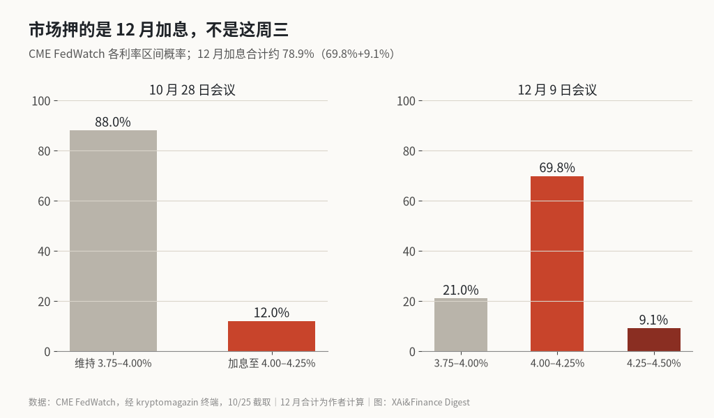
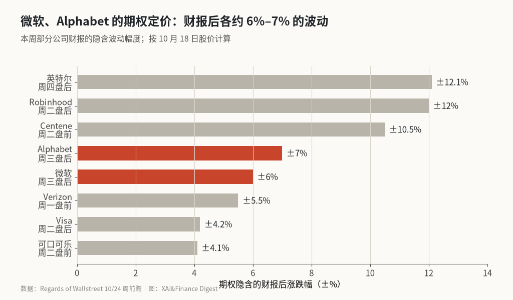

超级周三：美联储几乎不会动，真正的考题是微软和 Alphabet
北京时间周四凌晨 2 点，美联储公布利率决定；几个小时后，市值最大的两家云厂商交出季报。期货只给这周加息 12% 的概率，期权却给两家财报各押了 6%–7% 的波动。
这里算的是两组市场自己报出来的价：利率期货给本周和 12 月加息分别定了多大的概率，期权又给本周各家财报后的股价波动定了多大的幅度。CME FedWatch 10 月 25 日的数据是，本周维持利率的概率 88%，12 月加息的概率合计约 79%。期权市场对微软财报后的波动定价约 6%，对 Alphabet 约 7%。结论很直接：周三的美联储决定本身大概率没有悬念，市场真正下注的是两件事，一是微软和 Alphabet 的云业务和资本开支，二是周四公布的 9 月 PCE 通胀会不会把 12 月加息坐实。
时间表
| 北京时间 | 事件 |
|---|---|
| 10/26 周一晚 | Verizon 财报（美东盘前） |
| 10/27 周二晚 | 可口可乐、波音、Centene 财报；20:30 9 月耐用品订单 |
| 10/28 周三凌晨 | Visa、Robinhood 财报（美东周二盘后） |
| 10/29 周四 02:00 | 美联储利率决定，02:30 沃什记者会 |
| 10/29 周四凌晨 | 微软、Alphabet、ServiceNow、T-Mobile 财报（美东周三盘后） |
| 10/29 周四 20:30 | 三季度 GDP 初值、9 月 PCE |
| 10/30 周五凌晨 | 亚马逊、英特尔财报（美东周四盘后） |
| 10/30 周五晚 | 雪佛龙、艾伯维财报；20:30 三季度雇佣成本指数 |
美东时间周三下午 2 点公布决定，换成北京时间就是周四凌晨 2 点。这次会议不公布点阵图，下一次官员个人利率预测要等到 12 月。
上周五收在哪
道指上周五跌 652.82 点，跌幅 1.23%，收 52,215.16 点；标普 500 跌 0.52% 收 7,623.68 点，纳指跌 0.21% 收 25,955.34 点。WTI 原油站上每桶 100 美元，10 年期美债收益率周线收在 5.00%。
路透给的背景是：标普 500 今年涨了 11%，按已公布的财报推算，标普 500 三季度盈利同比增长超过 32%（LSEG 数据），本周约三分之一的标普成分股要发财报，是这个财报季最忙的一周。@StockMKTNewz 引 SeekingAlpha 的统计，截至周末已有 76 家标普成分股公布，其中 62 家每股收益超预期，48 家收入超预期。
@MSX_CN 的周末早报写了一个细节：纳指已经连跌两周，道指却连涨三周。指数之间走散了，分歧主要在 AI 股身上。
利率期货的概率分布见图

联邦基金利率现在是 3.75%–4.00%。美联储 9 月以 12 比 0 的投票加息，是 2023 年以来第一次加息。FedWatch 显示，本周维持不变的概率 88%，加息 25 个基点的概率 12%。路透引 LSEG 数据说本周加息概率不到 10%，12 月约 80%。两组数字口径不同，方向一致。
12 月那一栏我自己加了一下：升到 4.00%–4.25% 的概率 69.8%，再高一档的 9.1%，合计约 78.9%。路透的经济学家调查更极端，100 位里 94 位认为本周不动，100 位全部预计 12 月加息。
所以周三的利率决定本身没什么可赌的。要看的是声明措辞和沃什在记者会上的说法：今年还会不会再加一次，以及油价站上 100 美元后，美联储对 2027 年的加息次数怎么看。
@DtDt666 翻了 1994 年以来的议息会议材料，他的结论是加息周期一旦开始，只加一次的情况很少见，多次加息才是常态。@bboczeng 说得更狠：推高通胀的主要是 AI 资本开支，而不是石油，美联储这轮加息“绝对不可能浅尝辄止”。这是他的判断，帖子里没有给出拆分通胀来源的数据。
期权给各家财报定的波动幅度

隐含波动幅度是从期权价格反推出来的财报后涨跌幅，代表市场已经付钱买下的波动。Regards of Wallstreet 的数据是按 10 月 18 日的股价算的，也就是上周大跌之前。微软约 6.0%，Alphabet 约 7.0%。Robinhood 和英特尔都在 12% 左右，可口可乐最低，约 4.1%。
两家的预期也列一下：Alphabet 预计每股收益 3.00 美元、收入约 1,277 亿美元；微软预计每股收益 4.72 美元、收入约 907 亿美元。路透说今年几大云厂商的资本开支预计在 8,000 亿美元左右，投资者盯的是这笔钱的回报。
我看了一圈 X 上的预期，多数人关心的是同一件事。@qinbafrank 倾向微软会交出超预期的财报，理由是企业云需求有支撑、Copilot 收费路径更清楚、新增算力有机会转成收入，他最想看的是 Azure 增速能否超过公司自己的指引。@C_Barraud 转了彭博的标题：对 AI 开支的担忧可能盖过大型科技公司的强劲业绩。这两句话放在一起，就是这周的矛盾：业绩大概率不差，市场在乎的是花了多少钱。
周四的 PCE 才决定 12 月
周四北京时间晚上 8 点半，三季度 GDP 初值和 9 月 PCE 同时公布。PCE 是美联储官方盯的通胀指标。二季度 GDP 年化增长 2.2%；8 月核心 PCE 同比 3.0%，克利夫兰联储 10 月 22 日的实时预测把 9 月放在 3.05% 左右。
按这个读法，PCE 落在 3.05% 附近，12 月加息的概率大致不变；明显偏高的话，12 月加息就接近板上钉钉。说白了，周三晚上美联储给的是措辞，周四晚上 PCE 给的是数字。
我不打算猜 PCE 的小数点。能做的是把两个时间点分开：周四凌晨看沃什怎么说，周四晚上看数据是否支持他的说法。
周三盘后到周四晚上，哪些信号说了算
总的来说，这一周美联储大概率只给措辞，真正的变量是两家公司的资本开支和云业务，再加周四晚上的 PCE。
第一个是周三盘后两家的资本开支指引。如果资本开支继续上调，而 Azure 和谷歌云的增速没有同步加快，“开支担忧”这一边会占上风。
第二个是纳指。@The_RockTrading 给了一个技术位：QQQ 在 715 美元下方待得越久，回到 200 日均线 676 美元的可能性越大，本周收在 718 美元上方才算结构转好。这只是他个人的技术判断。
如果周四晚上 PCE 不高于 3.05%，而两家云业务都超预期，上周的 AI 股抛售就显得有点过头。如果反过来，资本开支上调、云增速放缓、PCE 偏热同时出现，这一周的波动大概率会比期权定价的还大。
X 上怎么看
结论 · 多空分歧：4 位看多，4 位看空，4 位中性/分歧。中性的人在列日程，看多的人押财报超预期，看空的人押加息周期拉长和 AI 开支担忧。
▲ 看多4 位
▼ 看空4 位
QQQ 在 715 下方待得越久，回到 200 日线 676 的可能越大；本周收在 718 上方才算结构转好。
● 分歧或中性4 位
观点为 X 用户当日公开帖子的中文摘要，忠于原文但有删减；标「未核实」的为预测、个人推测或单一来源说法。立场为人工判断。
数据来源
- 隐含波动幅度按 10 月 18 日股价计算，上周下跌后期权定价可能已经变化。
- FedWatch 概率为 10 月 25 日截取的数值；路透引 LSEG 的“本周加息不到 10%、12 月约 80%”口径不同，方向一致。
- 12 月加息合计 78.9% 为作者把两个更高利率区间的概率相加得出。
- 北京时间按美东夏令时（UTC−4）换算。
- https://www.regardsofwallstreet.com/news/stock-market-week-ahead-october-26-2026
- https://www.investing.com/news/economy-news/earnings-flood-fed-meeting-will-test-rickety-ai-market-rally-4971185
- https://www.investing.com/news/economy-news/fed-to-skip-october-but-raise-rates-again-in-december-nearly-all-economists-say-reuters-poll-4960095
- https://terminal.kryptomagazin.cz/en/macro/fedwatch
- https://x.com/StockMKTNewz/status/2114364349603049533
- https://x.com/StockMKTNewz/status/2114178310381191457
- https://x.com/MSX_CN/status/2114177076920307737
- https://x.com/DtDt666/status/2114347999669223611
- https://x.com/bboczeng/status/2114172427555180848
- https://x.com/qinbafrank/status/2114359719825678824
- https://x.com/C_Barraud/status/2114446522100388194
- https://x.com/The_RockTrading/status/2114349089827811680